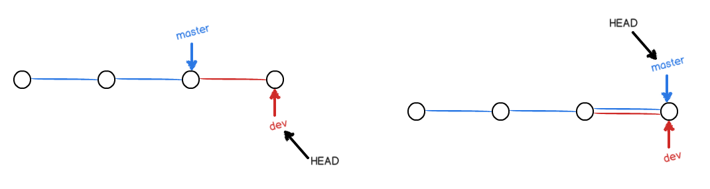
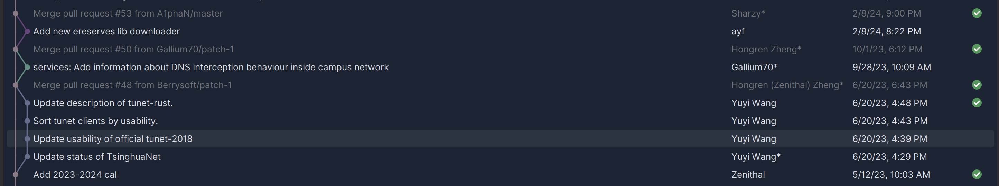

Git¶
Intro¶
为啥要用 Git? 首先, 你并不一定要用 Git, 或者任何的源码管理系统. 只要你:
- 有足够的 Brain Power, 知道自己在干嘛, 一周前干了啥, 当时为啥要这么干
- 有足够的耐心, 在不小心删掉写了一整天的代码之后重新写一遍
- 有足够的能力, 独立开发, 不需要深入合作; 或者能够接受使用微信 / 邮件互相发代码以同步更改
这些要求显然是很容易达到的 个鬼, 但是 Git 为我们提供了更好的解决方案:
- 使用 Git Blame, 你可以查看每一行代码是谁写的, 以及为什么写的
- 使用 Git Log / Git CherryPick, 你可以回滚更改, 也可以将某些更改应用到其他分支
- 使用 Git Branch, 你可以在不同的分支上开发不同的功能, 多人协作, 互不干扰
本地仓库¶
首先我们介绍 Git 的本地仓库结构.
Git 的所有东西都在 .git 目录下. 我们一般把 最新的项目文件和其它资源文件 (也就是 Repo 所在的文件夹除了 .git 之外的所有东西) 叫做 工作区 (Working Directory).
在工作区中, 你可以对文件进行增删改查, 但是这些更改并不会被 Git 记录. 为了记录这些更改, 你需要这些更改添加到 暂存区 (Staging Area). 暂存区中的文件会在下一次提交时被记录.

将文件添加到暂存区使用 git add 命令; 提交更改到本地仓库使用 git commit 命令.
提交之后, 你的 更改 (Diff) 会被记录到本地仓库中. 你可以使用 git diff 命令查看更改.
分支管理¶
Git 的分支管理是其最大的特色之一. 你可以在不同的分支上开发不同的功能, 互不干扰. 比如:
master分支是主分支, 用于发布稳定版本dev分支是开发分支, 用于开发新功能和测试不太稳定的版本- 其它分支用于开发特定功能, 比如
feature-xxx分支
假设你在 a 分支上开发 A 功能, 你的同事在 b 分支上开发 B 功能; 同时你可以在 fix_c 分支上修复 C 功能的 Bug. 在理想的情况下, 这三个功能的开发和修复互不干扰, 可以同时进行.

远程仓库¶
除了本地仓库, Git 还支持远程仓库. 远程仓库 是一个网络上的仓库, 你可以从远程仓库拉取代码, 也可以将本地仓库的更改推送到远程仓库.
远程仓库的地址一般是一个 URL. 使用 git remote add 命令添加远程仓库, 使用 git push 命令推送更改到远程仓库, 使用 git pull 命令拉取远程仓库的更改, 用 git fetch 命令获取远程仓库的更改但不合并到本地仓库.
远程仓库的一般访问方式有两种, HTTPS 和 SSH. HTTPS 方式一般会要求输入邮箱和 Personal Access Token (PAT), SSH 方式需要配置 SSH Key (详见 SSH 章节).
远程仓库上的 PR 管理¶
以 Github 为例, 在远程仓库上, 你可以发起 Pull Request (PR), 对 PR 进行评论 / 审查, 最终合并 PR 到 目标分支.
PR 有若干合并策略:
- FF-Only: 只允许 Fast-Forward 合并, 也就是说, 目标分支的 HEAD 必须是 PR 分支的祖先.

- Merge Commit: 生成一个 Merge Commit, 形成环状结构.

- Rebase: 将 PR 分支的更改变基到目标分支上, 然后 Fast-Forward 合并.
- Squash: 将 PR 分支的所有更改合并为一个 Commit, 然后 Fast-Forward 合并.
VSCode 的 Git 支持¶
VSCode 的 Git 支持由 Git 插件提供; GitLens 插件包含更多的功能 (但是我没怎么用过).

在开启 GitLens 插件之后, 你可以在每行代码的右边看到这一行代码的最近修改者, 最近修改时间, 以及这一行代码的历史. (比如下图就是前面几行的历史). 现在遇到奇怪的 Bug, 你就知道是谁写的啦 (然后就可以去问他, '这么写有什么特殊的意义和考虑嘛?')
JetBrains IDE 的 Git 支持¶
JetBrains IDE 原生支持 Git. 这些 IDE 除了贵以外没有什么缺点 (但是你清有免费学生版, 所以不用白不用).
这张图是我们软工大作业后端的开发环境. 左侧的栏目是 Git (VCS) 的版本控制栏目, 可以看到当前暂存区状态等信息; 下面的栏目是 Git 信息, 包括了 Git Remote 和 Branch 信息; Git Log; 选中 Commit 可以看到 Commit 的详细信息. 后端的版本几乎是线性的, 但是软工要求不能直接在 master 分支上开发. (用了什么合并策略?)
这张图是我们软工前端的 UI 设计 (全都红了是因为这个项目的依赖全都没装). 点击函数右侧的 Bill +2 可以呼出 Git Blame, 看到每一行代码的修改历史.
比起后端代码 (几乎全是我写的), 前端代码充分体现了赶 DDL 时候多人 混乱 协作开发的特征: 多条分支并行开发, 多个 PR 同时进行, (用了什么合并策略?), 有条不紊解决了多个 Bug, 完成了项目的收尾工作.
这张图是 JetBrains IDE 的 Diff Viewer. 你可以看到两个 Commit 之间的更改, 以及更改的详细信息. 在翻找 Bug 的可能成因 / 解决 Merge Conflict 时, 这个功能可以说是一把利刃.
Cherry-Pick: 如何应用在其它分支上的更改¶
讲这件事的起因是这样的:
不管是软工大作业还是其它的开源项目, 每一个 PR 都期望只包含一个功能的更改. 但是怎么定义 一个功能 就每个人有不同的理解了. 比如我认为这两个功能是关联的, 可以扔一块; 但是另一个人认为这两个功能是独立的, 应该分开.
这时候就可能出现这样的情况, 你需要把一个 Branch 的改动分成两个 Branch 完成 (当然这也常见于软工课三个小时写出来 1500 行一个 PR 但你想 Squash Merge 的时候). 推荐的方法是使用 Cherry-Pick 方法, 把不同类型的 Commit 拆开到不同的 Branch 上面.
在 JetBrains IDE 里面, 这件事情格外简单. 首先我们 Switch 到对应的分支上, 在 Log 里面找到我们想要的 Commit (或里面想要的更改), 右键选择 Cherry-Pick Selected Changes, 然后就可以把这个更改应用到当前分支上了. 如果有冲突, 也可以在 Conflict Resolver 里面解决.
Conflicts: 解决冲突的一般方法¶
我们在多人协作合并 PR 的时候难免会遇到冲突. 在遇到冲突的时候相信大多数人都会很头疼 (当然我也是), 但是冲突又是不可避免的事情. 当然, 你可以在小群里发, "这会大家都别写, 我写, 谢谢你们请你们喝奶茶", 但是如果是一个 15 人的项目, 这就会显著拖慢项目的进度了.
首先你需要记住一点: 不要盲目合并!!! 不要盲目 Accept Theirs!!! 尤其不要盲目 Accept Yours!!!
以及, 不要 Force Push!!! 确认线上版本正确后再删本地分支!!! 不然就会出现这样的情况:
在 Merge 的时候, 基本的策略如下:
-
如果你的更改不多, 可以考虑
Accept Theirs, 然后手动添加你的更改 -
如果你确信你的更改会完全覆盖他们的更改 (比如你把某一个函数整个 删掉 了 (注意不是挪了个地方)), 那么可以考虑
Accept Yours -
在大多数情况下, 你需要彻底搞清楚你干了什么, 他们干了什么, 然后手动解决冲突
在 JetBrains IDE 里面, 当出现冲突的时候, Git 栏目里面会显示冲突的文件, 点击 Resolve 会进入冲突解决界面.
在这个界面中, 左侧是现有的更改, 右侧是希望合并的更改, 中间是两者的最近共同祖先, 蓝色和绿色的部分是没有冲突的部分, 红色的部分是出现冲突, 需要手动解决的部分. 你可以选择 Accept Theirs (点一下右边的箭头) 或 Accept Yours (点左边的) 来解决冲突, 也可以手动修改冲突的部分.
一般来说, 先点一下整个页面左上角的 "Apply All Non-Conflicting Changes" 可以把没有冲突的部分合并掉, 然后再手动解决冲突的部分. 这很重要, 否则只有冲突的部分被解决了, 剩下的全丢了 (x
然后我们看冲突的部分: 在这个例子中, 我添加了 SM2 算法支持, 而主线上添加了 2FA 支持, 这两个更改相互独立, 但是修改发生在了同一个地方. 因此应该保留两者的更改.
由于我这边的更改不多, 我选择先 Accept Theirs, 然后在最终结果中添加我的更改.
全部 Resolve 之后, 务必确认程序按照预期运行, 然后运行可能的格式更正脚本 / 代码风格检查脚本, 最后再提交.
Git LFS: 如何优雅管理大文件¶
Git 的逻辑是存储 diff. 但对于二进制大文件, 尤其是图片, 视频, 模型等, Git 无法给出正确的 diff, 从而会倾向于把整个文件删掉重新上传.
那么: 如果你有一个模型, 这个模型有 100MB, 你每次微调了一点, 调了 10 次, 这时候你的 Git 仓库就有 1GB 了. 其他人在 Pull / 你在其它设备上 Pull 的时候就要下载完整的 1GB 数据 (即便你并不需要之前的 9 个版本). 对一个体量更大的项目, 这就会变得不可接受了. (你也不想为了一个 100M 的项目下载 10GB 的东西吧)
因此, Git LFS (Large File Storage) 被开发出来以解决这一问题. LFS 的基本原理是把仓库里的文件换成一个指向 LFS 服务器的 "指针", 然后在需要的时候再下载这个文件.
LFS 在 Linux 下一般是一个单独的包 git-lfs. 安装之后就可以用 git lfs init 初始化 LFS.
此时 LFS 给 Git 挂了一些钩子, 使得所有被 git lfs track 的文件都会随着 Git 的 Push / Pull 被上传 / 下载到 LFS 服务器上.
Git Ignore: 不要把奇怪的文件上传到仓库¶
在 Git 仓库中, 绝大多数时间里都会有一些并不需要上传的文件, 不管是训练模型的输出, 编译生成的程序, IDE 的配置, 测试数据库等等.
一定记得把这些文件加入到 .gitignore 文件中. 这个文件会告诉 Git 哪些文件不需要被上传.
man gitignore
其它的学习方法¶
- 使用 Help!
- Oh My Git 这是个游戏 (?) 感觉还挺有趣的